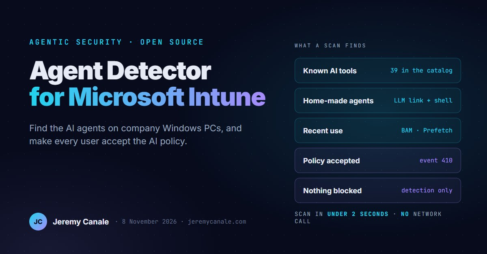

Sécurité agentique · Outil de détection
Agent Detector: finding the AI agents on company Windows PCs
Un détecteur Windows publié sur GitHub et déployé avec Microsoft Intune, qui repère les outils d'IA connus et les agents développés en interne sur les postes de l'entreprise, fait accepter la politique IA à chaque utilisateur et consigne tout dans le journal d'événements Windows. Il ne bloque rien.
Article en anglais · 8 min de lecture · code sur GitHub